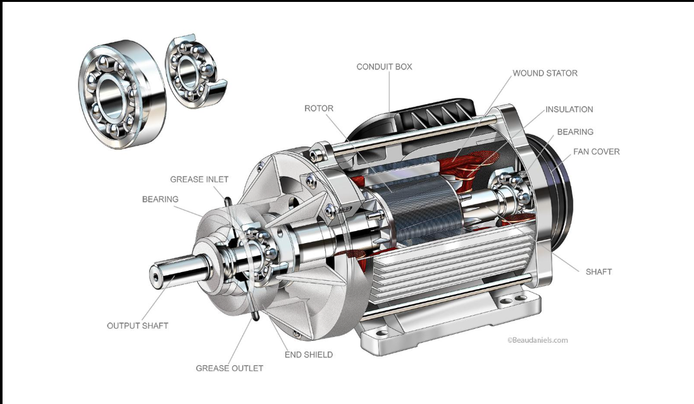
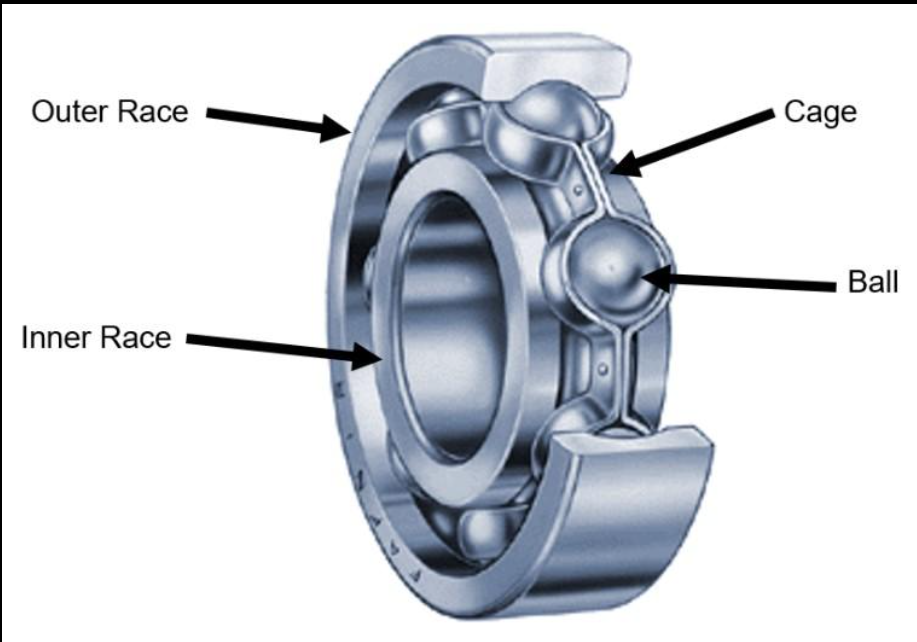
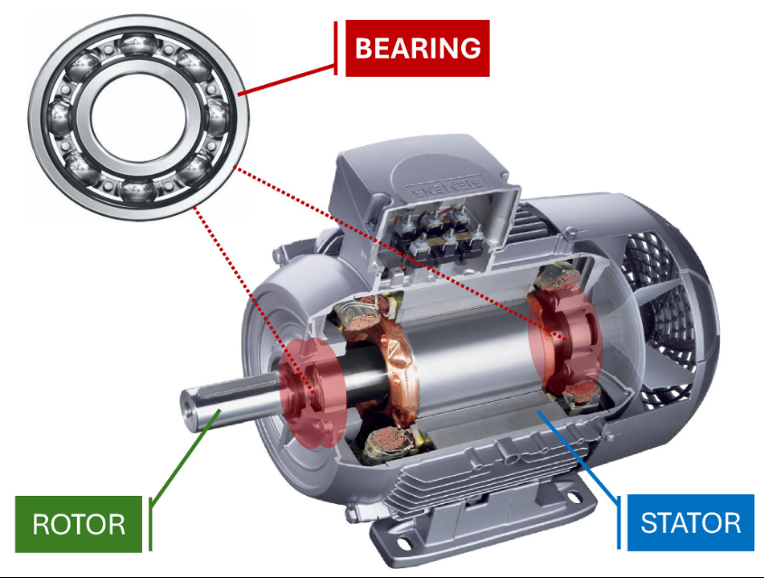

Welcome to BearingIQ
An intelligent, embedded-systems-driven platform for predictive maintenance. We combine real-time sensor data with Machine Learning and Artificial Intelligence to detect, analyze, and prevent critical motor bearing failures.
The Problem: Motor & Bearing Failures
In modern embedded systems and industrial applications, electric motors are the backbone of operations. However, they are prone to mechanical degradation over time.
Bearings are critical components that support the motor's shaft and reduce friction. They endure intense physical stress. In fact, bearing failure accounts for over 40% of all electric motor breakdowns. When a bearing's inner race, outer race, or rolling ball elements get damaged (even microscopically), it creates distinct vibration patterns.



The Data: CWRU Bearing Dataset
To build our AI models, we rely on the industry-standard CWRU Bearing Dataset. This dataset was collected using accelerometers placed on motor housings to measure high-frequency vibration signals (up to 48kHz).
Our project processes these raw time-series vibration signals into key statistical features: RMS, Kurtosis, Skewness, Crest Factor, etc. By analyzing these features, we can distinguish between a healthy motor and one with a microscopic 0.007-inch defect on its inner race.
Our Solution: ML & API Integration
BearingIQ isn't just a dashboard; it's a complete intelligent pipeline. We've built a robust Python Flask REST API that serves Machine Learning predictions and powers the following advanced features.
AI Adviser
A conversational expert system. Feed it sensor data, and it acts as a virtual maintenance engineer—telling you the root cause, assessing severity, and recommending a timeline for parts replacement.
Live ML Prediction
Using a Random Forest Classifier trained to ~98% accuracy. Modify sensor readings dynamically and instantly visualize how the model's confidence shifts across the 10 different fault classes.
REST API Integration
Ready for IoT. Edge devices and embedded systems can send HTTP POST requests to /api/predict with live telemetry data to receive immediate health assessments programmatically.